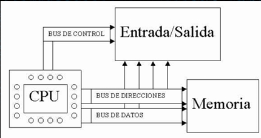
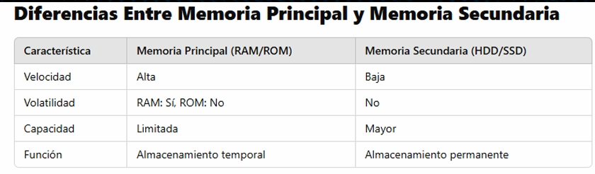

Unidad Aritmética Lógica (ALU)
Definición: Es el componente de la CPU encargado de realizar operaciones matemáticas y lógicas. Funciones principales: Operaciones aritméticas: Suma, resta, multiplicación y división. Operaciones lógicas: AND, OR, NOT, XOR. Comparaciones: Mayor que, menor que, igual. Desplazamientos de bits: Movimientos a la izquierda o derecha en registros.

1.2.1.3 Registros
En el contexto de arquitecturas de computadoras, el término "Registros" se refiere a pequeños espacios de almacenamiento dentro del procesador o CPU (Unidad Central de Procesamiento). Estos son de acceso extremadamente rápido, mucho más rápido que la memoria principal (RAM), y se utilizan para almacenar datos y resultados intermedios durante el procesamiento de instrucciones
Función de los Registros en la Arquitectura de Computadoras:
Almacenamiento Temporal: Los registros almacenan datos temporales que están siendo procesados por la CPU, como operandos, direcciones de memoria y resultados intermedios. Este almacenamiento rápido es crucial para la ejecución de instrucciones.
Optimización del Rendimiento: : Dado que los registros están directamente integrados en el procesador, las operaciones que involucran registros son mucho más rápidas que aquellas que requieren acceso a la memoria principal.
Control de Flujo: Algunos registros están dedicados a controlar el flujo de ejecución, como el contador de programa (PC, Program Counter), que mantiene la dirección de la siguiente instrucción que se debe ejecutar
Operaciones Matemáticas y Lógicas: En las operaciones aritméticas o lógicas, los registros mantienen los valores de entrada y salida. Por ejemplo, en una suma, los operandos y el resultado pueden almacenarse en registros
Tipos Comunes de Registros:
1. Registros de Datos: Almacenan los datos que están siendo procesados o manipulados. Pueden ser utilizados para guardar operandos en una operación aritmética.
2. Registros de Dirección: : Almacenan direcciones de memoria, como las direcciones de los operandos o la siguiente instrucción a ejecutar
3. Registros de Propósito General: Son registros que pueden ser utilizados por las instrucciones de la CPU para almacenar cualquier dato o dirección. Por lo general, son accesibles para la mayoría de las instrucciones
4. Registros de Propósito Especial: Estos incluyen registros específicos para el control del flujo, como el contador de programa (PC), el registro de estado (PSW), y el registro de instrucciones (IR)
5. Registros de Estado (Flags): Estos registros almacenan indicadores de estado que muestran el resultado de las operaciones realizadas (por ejemplo, si ocurrió un desbordamiento, si un resultado es cero, o si se produjo un error de signo).
1.2.1.4 Buses
Un bus es un conjunto de líneas de comunicación o conductores que permiten la transferencia de datos y señales entre diferentes componentes de la computadora. Los buses son fundamentales porque facilitan la comunicación entre la CPU, la memoria, y otros periféricos, como los dispositivos de entrada/salida.

Características Importantes de los Buses:
Velocidad de Transferencia: La velocidad de los buses es crucial para el rendimiento general del sistema. Un bus más rápido permite una mayor cantidad de datos para ser transferidos en menos tiempo, lo que puede mejorar el rendimiento de la CPU.
Ancho del Bus:
El número de líneas en cada tipo de bus es importante.
Cuanto mayor sea el ancho del bus, más datos se pueden transferir
simultáneamente. Un bus de 64 bits, por ejemplo, puede transferir más
datos en cada ciclo de reloj que un bus de 32 bits.
Sincronización:
Los buses generalmente se sincronizan con el reloj del
sistema. Esto asegura que todas las transferencias de datos y señales se
realicen de manera ordenada y en el momento correcto
Función de los Buses en una Computadora:
1. Transferencia de Datos: Los buses permiten la transferencia de datos entre la CPU, la memoria y los dispositivos periféricos. Esto incluye datos que van de la memoria a la CPU para ser procesados o desde la CPU a los dispositivos de salida
2. Dirección y Control:
Los buses también transmiten señales de control (por ejemplo,
cuándo leer o escribir datos) y direcciones de memoria (para indicar qué ubicación de
memoria debe ser accedida).
Sincronización:
Los buses generalmente se sincronizan con el reloj del
sistema. Esto asegura que todas las transferencias de datos y señales se
realicen de manera ordenada y en el momento correcto
Función: Transporta los datos entre los distintos componentes del sistema (como la CPU, la memoria y los dispositivos de entrada/salida)
Ancho del bus:
El ancho del bus de datos (el número de líneas de bits que puede
transportar) determina cuántos bits de información se pueden transmitir en paralelo en una
sola transferencia. Por ejemplo, un bus de 8 bits puede transferir 8 bits a la vez, mientras que
un bus de 32 bits puede transferir 32 bits simultáneamente
Ejemplo:
Si el bus de datos tiene un ancho de 32 bits, entonces se puede transferir un valor
de 32 bits (o 4 bytes) de la memoria a la CPU en una sola operación
Memoria Principal
La memoria principal es la encargada de almacenar temporalmente los datos e instrucciones que la CPU necesita para ejecutar programas. Es fundamental para el rendimiento del sistema.
- (Random Access Memory)
Almacena datos e instrucciones temporalmente.
Permite acceso rápido a la CPU.
Tipos de RAM:
DRAM (Dynamic RAM): Necesita ser refrescada constantemente.
SRAM (Static RAM): Más rápida y cara, usada en caché.
ROM (Read-Only Memory)
Contiene instrucciones esenciales, como el firmware del sistema.
No volátil.
No se puede modificar fácilmente.
Tipos de ROM:
PROM (Programmable ROM)
EPROM (Erasable Programmable ROM)
EEPROM (Electrically Erasable Programmable ROM)
Memoria en los Sistemas de Computación
La memoria es un componente fundamental de cualquier sistema informático, ya que almacena y recupera datos e instrucciones necesarias para la ejecución de procesos. Se clasifica en varios tipos según su función, velocidad y volatilidad.
Memoria Volátil:
Pierde su contenido cuando se apaga el equipo.
Memoria RAM (Random Access Memory)
Memoria Caché
Registros del procesador
Memoria No Volátil:
Retiene los datos incluso sin energía.
Memoria ROM (Read-Only Memory)
Dispositivos de almacenamiento (SSD, HDD, USB, SD)
Memoria Flash

CONCEPTOS BASICOS DEL MANEJO DE MEMORIA
MEMORIA VIRTUAL:
con espacio del disco duro usado como
extensión de la RAM cuando esta se llena.
MEMORIA CACHE:
Almacena datos de acceso rápido para el
procesadoR
MEMORIA PRINCIPAL
(RAM):
que guarda temporalmente datos y
programas en uso
MEMORIA SECUNDARIA:
como discos duros (HDD), SSD, USB,
donde se almacena la información permanentemente.
2.ASIGNACION DE MEMORIA
Estatica:
Se reserva una cantidad fija de memoria antes de la
ejecucion del programa
Dinamica:
Se asigna y libera memoria en tiempos ejecucion,
optimizando recursos
3 .JERARQUIA DE MEMORIA
🟢 Registros:
Los más rápidos, dentro del procesador.
🟠Memoria Caché:
Rápida pero con capacidad limitada.
🔵RAM: Más grande, pero más lenta que la caché.
🔴Almacenamiento Secundario:
Mucho más grande, pero
más lento que la RAM.
4.GESTION DE MEMORIA
Segmentación:
Divide la memoria en segmentos lógicos según su
tipo de uso (código, datos, pila).
Paginación:
Divide la memoria en páginas de tamaño fijo, evitando
fragmentación.
Swapping: Mueve procesos entre RAM y disco para optimizar el
uso de memoria.
5.FRAGMENTACION DE MEMORIA
Fragmentación Interna:
Ocurre cuando los bloques de
memoria asignados son más grandes de lo necesario.
Fragmentación Externa:
Ocurre cuando hay pequeños bloques
libres dispersos que no pueden usarse eficientemente.
6. Memoria Virtual
Usa parte del disco duro como una extensión
de la RAM cuando esta se llena. Sin embargo,
es más lenta que la RAM real.
Memoria cache
La memoria caché es un tipo de memoria de acceso rápido que
almacena datos temporales para acelerar el procesamiento y
mejorar el rendimiento del sistema. Se encuentra entre el
procesador y la memoria principal (RAM) y permite acceder
rápidamente a datos que se usan con frecuencia
Tiene 3 niveles en los cuales esta
L1(primer nivel) que es el mas rapido y esta dentro del
procesador pero con poca capacidad
L2(Segundo nivel) un poco mas grande que la L1 pero mas lenta
L3(Tercer nivel) que esta compartida por varios nucles de la cpu
y mas grande, tambien es mas lenta que L1 Y L2
CARACTERISTICAS DE LA MEMORIA CACHE
Tiene como caracteristicas principales su VELOCIDAD ALTA superando a la
RAM, su CERCANA UBICACION AL PROCESADOR que se encuentra
integrado en la CPU o en la placa base, su TAMAÑO PEQUEÑO
generalmente en KILOBYTES(KB) o MEGABYTES(MB) ademas de su USO
INTELIGENTE que almacena datos y programas usados recienemente para
reducir los tiempos de espera
Como ventajas tenemos que reduce el tiempo de acceso de los datos,
mejora el rendimiento del procesador y disminuye la carga sobre la
memoria RAM
1.2.3 Manejo de n entradas y salidas
El manejo eficiente de múltiples dispositivos de entrada y salida (E/S) es crucial para
garantizar un rendimiento óptimo del sistema. Dado que los dispositivos periféricos
varían en velocidad y características, se implementan diversas técnicas para gestionar
la comunicación entre la CPU y estos dispositivos.
Técnicas de Manejo de E/S
1.2.3.1 Manejo de n entradas y salidas
Los módulos de entrada/salida
(E/S) son esenciales ya que
permiten la
comunicación entre la CPU y los
periféricos externos
Dirección:
Se refiere a cómo la CPU selecciona y se comunica
con un dispositivo de E/S especifico. Cada dispositivo tiene una
dirección única que la CPU utiliza para enviar y recibir datos.
Sincronización:
Es el proceso de coordinar la transferencia de
datos entre la CPU y los dispositivos de E/S para asegurar que
ambos estén listos para enviar o recibir información
Transferencia:
Este es el proceso real de mover dato entre la
CPU y los dispositivos de E/S. Puede realizarse mediante varios
métodos, como transferencia por encuesta (polling),
interrupciones o acceso directo a memoria (DMA).
Funciones Básicas de los
Módulos de E/S
Dispositivos de E/S
Comunes
Puertos Paralelos:
Este es el proceso real de mover dato entre la
CPU y los dispositivos de E/S. Puede realizarse mediante varios
métodos, como transferencia por encuesta (polling),
interrupciones o acceso directo a memoria (DMA).
Puertos Seriales:
Permiten la transferencia de un
bit a la vez. Son más lentos que los puertos
paralelos pero son útiles para largas distancias y
conexiones estables, como módems y dispositivos
de comunicación
Sincronización y
Transferencia de Datos
Sincronización Sincrónica:
Los datos se envían y reciben en un flujo continuo y
constante.Es adecuado para dispositivos que necesitan una alta velocidad de
transferencia y una baja latencia.
Sincronización Asincrona:
Los datos se envían en paquetes con señales de
control adicionales.Es adecuado para dispositivos que no requieren una
transferencia de datos continua.
Transferencia Paralela:
Se transfieren varios bits simultáneamente a través de
múltiples canales. Es rápida pero puede ser costosa y compleja debido a la
necesidad de múltiples líneas de comunicación.
Transferencia Serie:
Los bits se envían uno a uno a través de un solo canal.Es más
lenta que la transferencia paralela pero es más simple y económica, y adecuada
para conexiones de larga distancia.
Acceso directo a la memoria
El acceso directo a memoria (DMA, Direct Memory
Access) es un método que permite a ciertos dispositivos
de hardware acceder directamente a la memoria
principal sin la intervención del procesador.
Esto mejora el rendimiento del sistema al liberar a la
CPU de la carga de mover datos entre dispositivos de
entrada/salida (E/S) y la RAM.
Modos de transferencia
Puede operar en diferentes modos, como:
Modo ráfaga (burst mode): El controlador de DMA
transfiere un bloque completo de datos en una sola
operación
Modo ciclo robado (cycle stealing): Se transfiere un
pequeño número de datos en cada ciclo, alternando con
las operaciones de la CPU.
Modo transparente: La transferencia de datos ocurre solo
cuando la CPU está inactiva